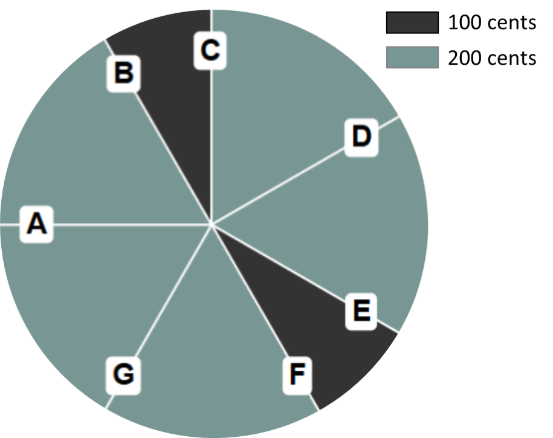
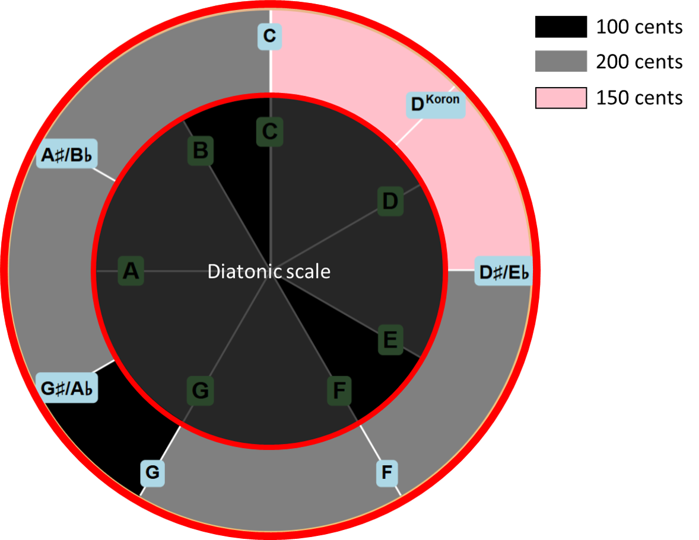
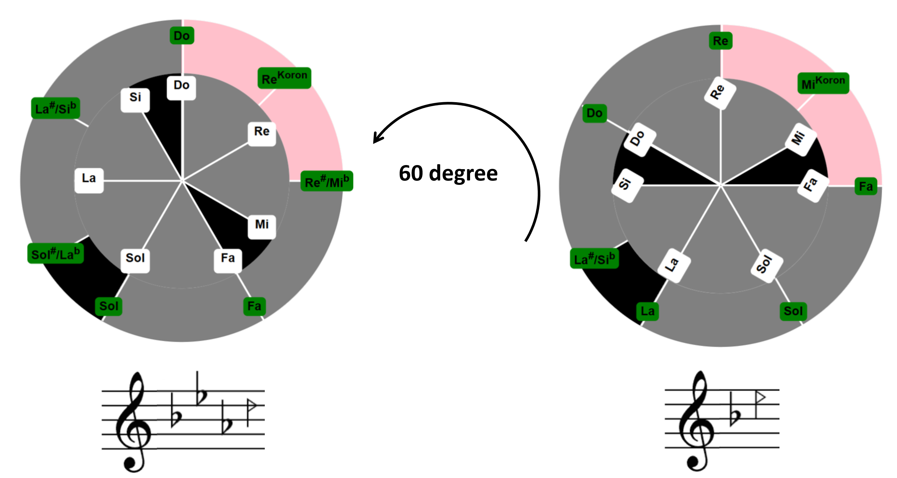

Persian Music Scales App
This guide explains how to read the circular scale diagrams, transpose the pitch models, and use the listening and analysis tools. The diagrams show selected pitch collections from Persian classical music; they do not represent every melodic feature of a dastgah or gusheh.
Reading the two circles
The display has two linked circles:
- Diatonic Circle: Shows the diatonic reference notes. Rotate this circle to transpose the model while keeping its interval pattern unchanged.
- Persian Scales Circle: Shows the degrees and intervals of the selected Persian pitch model. Its reference note is not necessarily the shahed or the finalis of the dastgah.


Reference note and modal functions
The note at 12 o’clock is the reference for the displayed pitch model. It is not automatically the shahed (a focal note) or the finalis (the note of melodic closure).
- Find the note at the top of the Persian scales circle.
- This is the reference note for the current display.
- Rotate the diatonic circle to explore other reference pitches. Where a modal function has been assigned from a documented source, ★ marks the shahed and ◆ the finalis. You can show or hide these symbols. Open "About these notes" to see the sources, provisional assignments, and limitations. If no symbol appears, that function has not been assigned in the current model; the note itself is not missing.
Example
For example, if the reference note is C (do), rotating the diatonic circle by 60° changes it to D (ré). The interval pattern stays the same, as do the scale degrees associated with any assigned shahed or finalis.

Further reading
For the background to the scale models and their visual representation, see the project article:
Guide de Persian Music Scales
Ce guide explique comment lire les cercles, transposer les modèles de gammes et utiliser les outils d’écoute et d’analyse. Les schémas présentent certaines collections de hauteurs de la musique classique persane ; ils ne rendent pas compte de toute l’organisation mélodique d’un dastgāh ou d’un guše.
Lire les deux cercles
Le schéma comporte deux cercles liés :
- Cercle diatonique : il présente les notes diatoniques de référence. En le faisant tourner, on transpose le modèle sans modifier sa structure intervallique.
- Cercle des gammes persanes : il montre les degrés et les intervalles du modèle choisi. La note de référence n’est pas nécessairement le šāhed ni la note finale du dastgāh.
Note de référence et fonctions des degrés
La note située à 12 heures sert de référence au modèle affiché. Elle ne correspond pas forcément au šāhed (note-pôle) ni à la note finale, ou finalis.
- Repérez la note en haut du cercle des gammes persanes.
- C’est la note de référence du schéma affiché.
- Faites tourner le cercle diatonique pour changer de note de référence. Lorsqu’une fonction modale est documentée, ★ indique le šāhed et ◆ la note finale. Vous pouvez afficher ou masquer ces signes. La rubrique « À propos de ces notes » présente les sources, les attributions provisoires et leurs limites. Si aucun signe n’apparaît, la fonction n’a pas encore été attribuée dans ce modèle ; la note elle-même n’est pas absente.
Exemple
Par exemple, avec do (C) comme note de référence, une rotation de 60° la remplace par ré (D). Les intervalles et les degrés associés aux éventuels signes de šāhed et de note finale restent inchangés.
Pour aller plus loin
L’article du projet présente les modèles et les principes de visualisation plus en détail :
اپلیکیشن گامهای موسیقی ایرانی
در این راهنما با روش خواندن دایرهها، انتقال گام و ابزارهای شنیدن و تحلیل صدا آشنا میشوید. شکلها مجموعهای از نتها و فاصلههای بهکاررفته در موسیقی دستگاهی را نشان میدهند؛ اما تمام ویژگیهای ملودیک دستگاه یا گوشه را در بر نمیگیرند.
شیوهٔ استفاده
در این نمایش دو دایره به هم وابستهاند:
- دایره دیاتونیک: نتهای مرجع دیاتونیک را نشان میدهد. با چرخاندن این دایره میتوان گام را انتقال داد، بیآنکه ترتیب فاصلههای آن تغییر کند.
- دایره گامهای ایرانی: درجات و فاصلههای مدل انتخابشده را نشان میدهد. نت مرجعِ بالای دایره لزوماً شاهد یا نت پایانی دستگاه نیست.
نت مرجع و نقش نتها
نتِ موقعیت ساعت ۱۲، مبنای نمایش گام است. این نت لزوماً شاهد، یعنی یکی از نتهای محوریِ ملودی، یا نت پایانی نیست.
- نتِ بالای دایرهٔ گامهای ایرانی را پیدا کنید.
- این نت مبنای نمایش فعلی است.
- برای تغییر نت مرجع، دایرهٔ دیاتونیک را بچرخانید. هرجا نقش یک نت بر اساس منبع مشخص شده باشد، ★ شاهد و ◆ نت پایانی را نشان میدهد. میتوانید این علامتها را نمایش دهید یا پنهان کنید. در بخش «دربارهٔ این نتها» منابع، مواردِ نیازمند بررسی بیشتر و محدودیتها توضیح داده شدهاند. اگر علامتی نمیبینید، یعنی نقش آن نت در مدل فعلی تعیین نشده است، نه اینکه آن نت وجود ندارد.
مثال
برای مثال، اگر نت مرجع «دو» باشد، با چرخاندن دایرهٔ دیاتونیک به اندازهٔ ۶۰ درجه، نت مرجع به «رِ» تغییر میکند. فاصلههای گام و درجههایی که نشانگر شاهد یا نت پایانی دارند، نسبت به یکدیگر ثابت میمانند.
مطالعهٔ بیشتر
برای توضیح بیشتر دربارهٔ مدلها و شیوهٔ نمایش آنها، مقالهٔ پروژه را بخوانید: